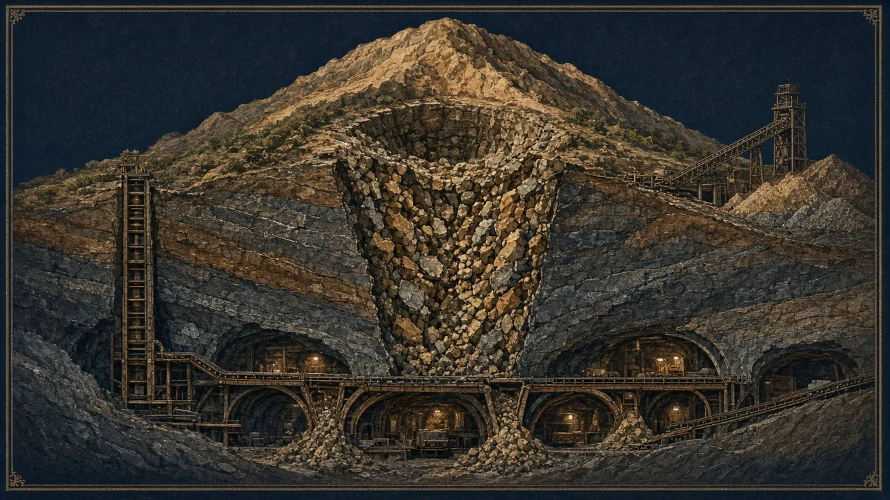
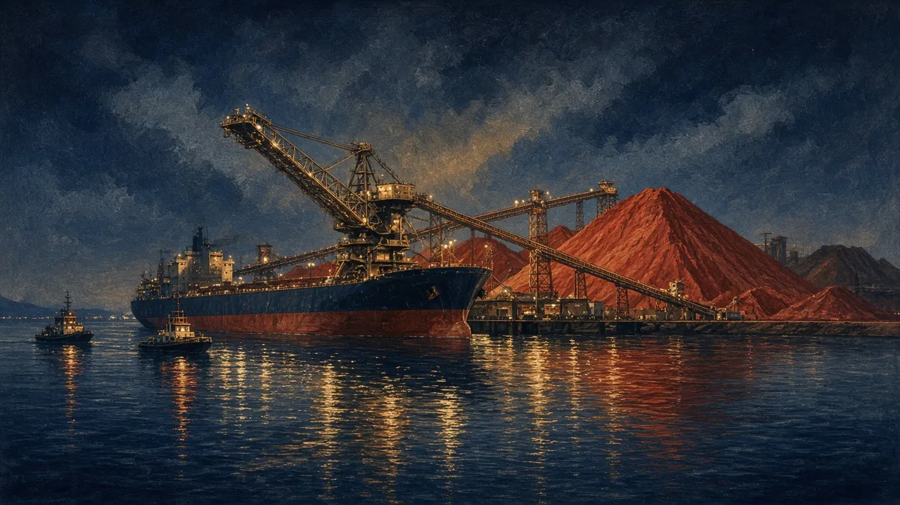

- Explain strip ratio and the open-pit to underground crossover
- Match a deposit geometry to a mining method (stoping, sublevel caving, block caving, room-and-pillar)
- Assess infrastructure needs (rail, port, power, water) as a share of capex for bulk commodities
On this page
Open pit or underground?
Open pits move enormous volumes cheaply, often a few dollars per tonne of material. But they must remove waste to reach the ore. Underground mines move less waste but cost far more per tonne of ore. They need higher grades.
Strip ratio = tonnes of waste ÷ tonnes of ore
Hemi's DFS strip ratio was 6.6:1 ✔: 6.6 t of waste for every tonne of ore. At, say, A$4/t mined, waste adds about A$26 per tonne of ore before a single gram is processed unverified.
As a pit deepens, the strip ratio rises, because the walls must lay back at a safe angle. At some depth, the cost of pit waste per tonne of ore exceeds the extra cost of mining that ore underground. Below that point, the mine switches to underground or stops. Many WA gold mines run a pit for years and then go underground from a portal in the pit wall.
"The reserve pit depends on the price. Find it."
You do not need to run pit-optimisation software (Whittle, Deswik). You do need to find the price used to design the reserve pit in the reserve statement. Hemi's DFS used A$2,170/oz pit shells while running its economics at A$2,700/oz ✔. A conservative pit price means upside at higher prices, through more ounces and a longer life. An aggressive pit price means the reserve could shrink if prices fall.
Underground methods
| Method | Suits | Selectivity | Cost |
|---|---|---|---|
| Stoping (long-hole open stoping, cut-and-fill) | Steep, narrow to medium veins and lodes | High | Medium–high |
| Sublevel caving | Steep, wide, competent ore | Medium (more dilution) | Medium |
| Block caving | Massive, low-grade orebodies (porphyries) | Low; the whole column caves | Very low per tonne, but huge upfront capex and long lead times |
| Room-and-pillar | Flat-lying ore (coal, some base metals, potash) | Medium | Low–medium |

Dilution, ore loss and grade control
- Dilution: waste mixed into ore. It lowers grade and adds tonnes.
- Ore loss: ore left behind or sent to waste.
- Grade control: close-spaced drilling or sampling during mining that decides, block by block, what goes to the mill. Poor grade control is a common cause of "reconciliation" problems (Module 11).
Contractor or owner mining?
Contractor mining lowers upfront capex (no fleet to buy) and transfers some execution risk, at a higher unit cost. Owner mining is cheaper over the long run but needs capital and people. Many ASX developers start with contractors and switch later.
Go deeper: Geotechnical and seismic risk optional
Deep and large-scale mines face rock stress, seismicity and water. Two 2025 events show why "single-asset geotechnical risk" belongs in every analysis.
Seismic activity at Ivanhoe's Kakula mine (DRC) flooded parts of the underground and suspended operations. Ivanhoe cut its 2025 guidance from 520–580 kt to 370–420 kt Cu, and the shares fell 16% on 26 May 2025 ✔.
About 800 kt of wet material flowed into the Grasberg Block Cave in Indonesia, and seven workers died. The block cave holds about 50% of PTFI's reserves. Freeport guided 2026 output about 35% lower than previously planned, and FCX fell 17% on 24 Sep 2025 ✔. Block caves are capital-efficient, but a failure hits a huge share of value at once.
Infrastructure: often the biggest line in bulk-commodity capex
For gold, a plant and a camp may be most of the capex. For iron ore, coal and bulk minerals, the value is in moving millions of tonnes: rail, port, power and water can exceed the mine itself.

The Simandou iron-ore project needed 600+ km of new railway plus a new deep-water port unverified. First production was achieved on 11 Nov 2025, and the first shipment sailed around 2–3 Dec 2025 ✔. The project took decades from discovery, which is the 15.7-year base rate of Module 2 at its extreme.

- Method: large open pits, strip ratio 6.6:1. Contractor vs owner mining is to be confirmed in NST's redesign.
- Pit shells at A$2,170/oz vs economics at A$2,700/oz, a conservative design with upside at higher prices.
- Infrastructure advantage: near Port Hedland, with highway, gas and grid access, so no new rail or port is needed.
- Risks: pit-wall stability in weathered and transitional zones; water management; long-term underground potential below the pits.
- A reserve pit designed at a price above consensus
- Underground grades that rely on minimal dilution assumptions
- A bulk-commodity study that assumes third-party rail or port access with no agreement
- A first-of-its-kind block cave or a deep, high-stress mine on an aggressive schedule
Practice tasks
Checkpoint quiz
Score 80% or more to mark this module mastered. Your best score is saved in this browser.